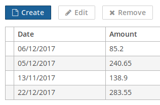

3.5.5.1. 声��创建�作
å�¯ä»¥åœ¨ XML ç•Œé�¢æ��è¿°ä¸ä¸ºä»»ä½•å®�ç�°äº† Component.ActionsHolder æ�¥å�£çš„组件指定一组æ“�作，包括整个窗å�£æˆ– frame。 æ“�作的定义使用 actions å…ƒç´ å®Œæˆ�，它包å�«åµŒå¥—çš„ action å…ƒç´ ã€‚
action å…ƒç´ æœ‰ä»¥ä¸‹å±�性：
-
id− æ ‡è¯†ç¬¦ï¼Œåœ¨ActionsHolder组件ä¸åº”该是唯一的。 -
caption– �作�称。 -
description– �作�述。 -
enable– å�¯ç”¨æ€§æ ‡è¯†(true/false)。 -
icon– æ“�ä½œå›¾æ ‡ã€‚
-
primary- å±�性，表æ˜�是å�¦åº”ä½¿ç”¨ç‰¹æ®Šè§†è§‰æ ·å¼�（true/false）çª�出显示表示æ¤æ“�作的按钮。çª�出显示在
hover主题ä¸é»˜è®¤å�¯ç”¨; è¦�在halo主题ä¸å�¯ç”¨æ¤åŠŸèƒ½ï¼Œè¯·å°†$cuba-highlight-primary-actionæ ·å¼�å�˜é‡�设置为true。默认情况下，
createæ ‡å‡†åˆ—è¡¨æ“�作和查找界é�¢ä¸çš„lookupSelectAction是çª�出显示的。 -
shortcut- å¿«æ�·é”®ã€‚å�¯ä»¥åœ¨ XML æ��è¿°ä¸å¯¹å¿«æ�·é”®å€¼è¿›è¡Œç¡¬ç¼–ç �。å�¯é€‰çš„修饰键：
ALTã€�CTRLã€�SHIFT，由“ - â€�å—符分隔。例如：<action id="create" shortcut="ALT-N"/>è¦�é�¿å…�使用硬编ç �值，å�¯ä»¥ä½¿ç”¨ä¸‹é�¢åˆ—表ä¸çš„预定义快æ�·é”®åˆ«å��，例如：
<action id="edit" shortcut="${TABLE_EDIT_SHORTCUT}"/>-
TABLE_EDIT_SHORTCUT -
COMMIT_SHORTCUT -
CLOSE_SHORTCUT -
FILTER_APPLY_SHORTCUT -
FILTER_SELECT_SHORTCUT -
NEXT_TAB_SHORTCUT -
PREVIOUS_TAB_SHORTCUT -
PICKER_LOOKUP_SHORTCUT -
PICKER_OPEN_SHORTCUT -
PICKER_CLEAR_SHORTCUT
�一�选择是使用
Config��和方法的完全�定�称，这个方法返�快�键定义：<action id="remove" shortcut="${com.haulmont.cuba.client.ClientConfig#getTableRemoveShortcut}"/> -
-
visible– å�¯è§�æ€§æ ‡è¯† (true/false).
下�是�作声�和处�的示例。
-
为整个界�声��作：
<window> <actions> <action id="sayHello" caption="msg://sayHello" shortcut="ALT-T"/> </actions> <layout> <button action="sayHello"/> </layout> </window>// controller @Inject private Notifications notifications; @Subscribe("sayHello") protected void onSayHelloActionPerformed(Action.ActionPerformedEvent event) { notifications.create().setCaption("Hello").setType(Notifications.NotificationType.HUMANIZED).show(); }在上é�¢çš„示例ä¸ï¼Œå£°æ˜�了一个æ“�ä½œï¼Œå®ƒçš„æ ‡è¯†ç¬¦æ˜¯
sayHelloï¼Œæ ‡é¢˜æ�¥è‡ªç•Œé�¢çš„消æ�¯åŒ…。æ¤æ“�ä½œè¢«ç»‘å®šåˆ°ä¸€ä¸ªæŒ‰é’®ï¼ŒæŒ‰é’®çš„æ ‡é¢˜å°†è¢«è®¾ç½®ä¸ºæ“�作的å��称。界é�¢æ�§åˆ¶å™¨è®¢é˜…æ“�作的ActionPerformedEventï¼Œè¿™æ ·å½“ç”¨æˆ·å�•å‡»æŒ‰é’®æˆ–按下 ALT-T å¿«æ�·é”®æ—¶ï¼Œå°†è°ƒç”¨onSayHelloActionPerformed()方法。 -
为PopupButton声��作:
<popupButton id="sayBtn" caption="Say"> <actions> <action id="hello" caption="Say Hello"/> <action id="goodbye" caption="Say Goodbye"/> </actions> </popupButton>// controller @Inject private Notifications notifications; private void showNotification(String message) { notifications.create() .withCaption(message) .withType(NotificationType.HUMANIZED) .show(); } @Subscribe("sayBtn.hello") private void onSayBtnHelloActionPerformed(Action.ActionPerformedEvent event) { notifications.create() .withCaption("Hello") .show(); } @Subscribe("sayBtn.goodbye") private void onSayBtnGoodbyeActionPerformed(Action.ActionPerformedEvent event) { notifications.create() .withCaption("Hello") .show(); } -
为Table声��作:
<groupTable id="customersTable" width="100%" dataContainer="customersDc"> <actions> <action id="create" type="create"/> <action id="edit" type="edit"/> <action id="remove" type="remove"/> <action id="copy" caption="Copy" icon="COPY" trackSelection="true"/> </actions> <columns> <!-- --> </columns> <rowsCount/> <buttonsPanel alwaysVisible="true"> <!-- --> <button action="customersTable.copy"/> </buttonsPanel> </groupTable>// controller @Subscribe("customersTable.copy") protected void onCustomersTableCopyActionPerformed(Action.ActionPerformedEvent event) { // ... }在这个例å�ä¸ï¼Œé™¤äº†è¡¨æ ¼çš„
createã€�editå’Œremoveæ ‡å‡†åŠ¨ä½œä¹‹å¤–ï¼Œè¿˜å£°æ˜�了copyæ“�作。trackSelection="true"å±�性表示如æ�œè¡¨æ ¼ä¸æ²¡æœ‰è¡Œè¢«é€‰ä¸ï¼Œåˆ™æ“�作和相应按钮将被ç¦�用。如æ�œè¦�对当å‰�é€‰å®šçš„è¡¨æ ¼è¡Œæ‰§è¡Œæ“�作， 这个å±�性就很有用。 -
声�PickerField�作:
<pickerField id="userPickerField" dataContainer="customerDc" property="user"> <actions> <action id="lookup" type="picker_lookup"/> <action id="show" description="Show user" icon="USER"/> </actions> </pickerField>// controller @Subscribe("userPickerField.show") protected void onUserPickerFieldShowActionPerformed(Action.ActionPerformedEvent event) { // }在上é�¢çš„例å�ä¸ï¼Œä¸º
PickerField组件声æ˜�äº†æ ‡å‡†çš„picker_lookupæ“�作和一个é¢�外的showæ“�作。由äº�显示æ“�作的PickerFieldæŒ‰é’®ä½¿ç”¨å›¾æ ‡è€Œä¸�æ˜¯æ ‡é¢˜ï¼Œå› æ¤æœªè®¾ç½®æ ‡é¢˜å±�性。descriptionå±�性å…�è®¸å°†å…‰æ ‡æ‚¬å�œåœ¨æ“�作按钮上时显示æ��示信æ�¯ã€‚
在界é�¢æ�§åˆ¶å™¨ä¸å�¯ä»¥é€šè¿‡ç›´æ�¥æ³¨å…¥æˆ–ä»�å®�ç�° Component.ActionsHolder æ�¥å�£çš„组件ä¸è�·å�–ä¸ä»»ä½•å·²å£°æ˜�æ“�作的引用。这对äº�以编程方å¼�设置æ“�作å±�性é��常有用。例如：
@Named("customersTable.copy")
private Action customersTableCopy;
@Inject
private PickerField<User> userPickerField;
@Subscribe
protected void onBeforeShow(BeforeShowEvent event) {
customersTableCopy.setEnabled(false);
userPickerField.getActionNN("show").setEnabled(false);
}